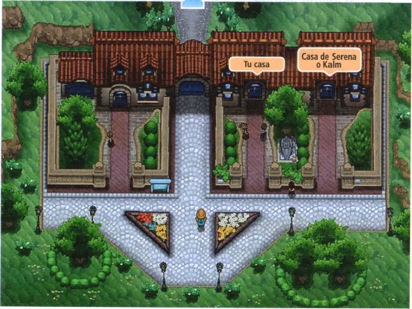
Pueblo Boceto
El pueblo donde empieza la aventura. Aquí viven el protagonista y sus amigos.
Generación 6 · X e Y
Kalos está al oeste de las otras regiones y se inspira en Francia. Es una región elegante, con palacios, museos, plazas y una gran ciudad, Ciudad Luminalia, con una torre enorme en el centro. Tiene mucha moda, arte y cocina, y muchos Pokémon bonitos.
Pokémon X y Pokémon Y salieron en todo el mundo en 2013, y fueron los primeros juegos en 3D. Trajeron 72 Pokémon nuevos, el tipo Hada, las megaevoluciones y la posibilidad de personalizar al protagonista con ropa y peinados.
El protagonista vive en Pueblo Boceto con sus amigos. El Profesor Ciprés le envía su primer Pokémon y empieza el viaje: hay que conseguir las ocho medallas de Kalos y vencer a la Liga, pero también parar al Equipo Flare, que quiere crear un mundo más bello a su manera.
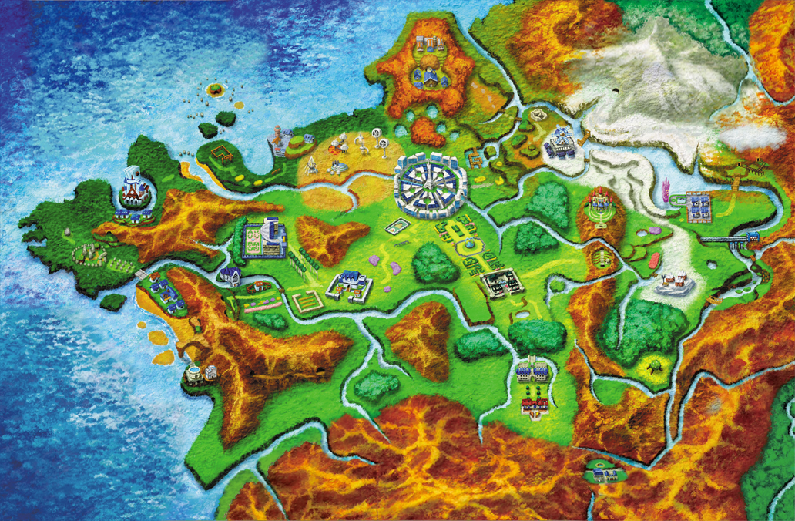

El pueblo donde empieza la aventura. Aquí viven el protagonista y sus amigos.
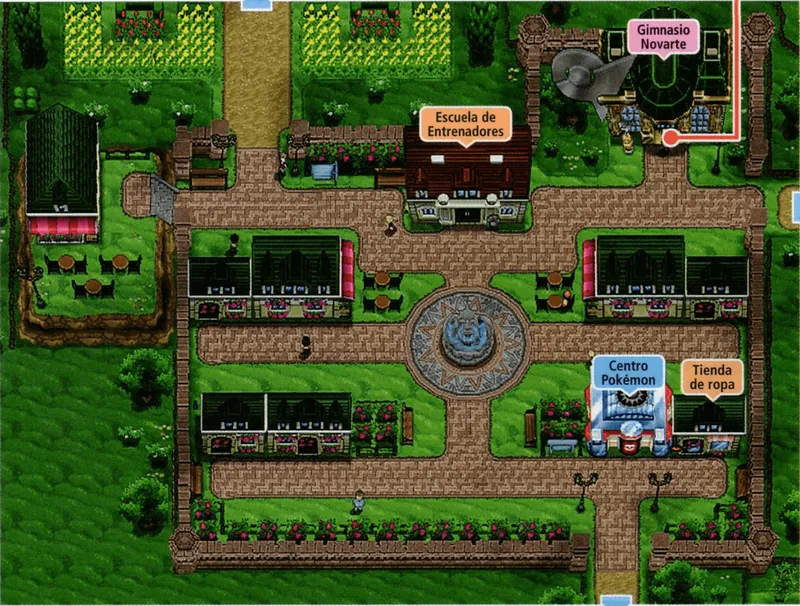
Una ciudad con calles tranquilas y muchos árboles. Aquí está el primer gimnasio.
Gimnasio: Bicho
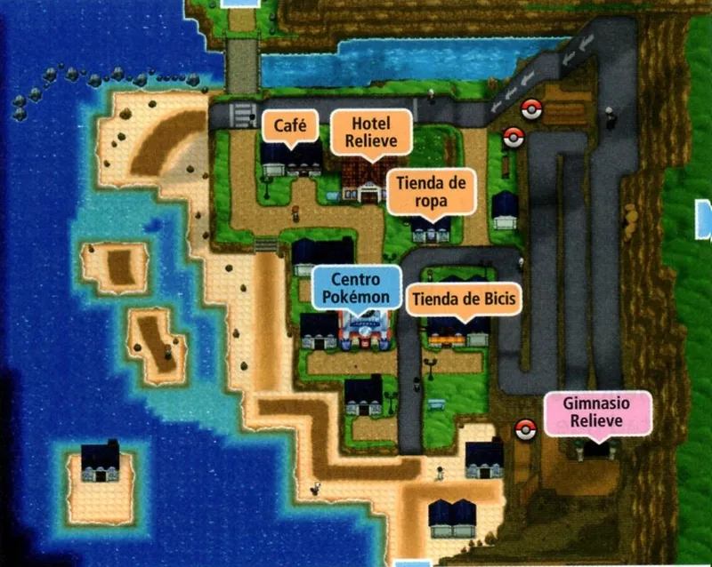
Una ciudad en el oeste de Kalos, entre rocas y una playa. Su gimnasio es de tipo Roca.
Gimnasio: Roca
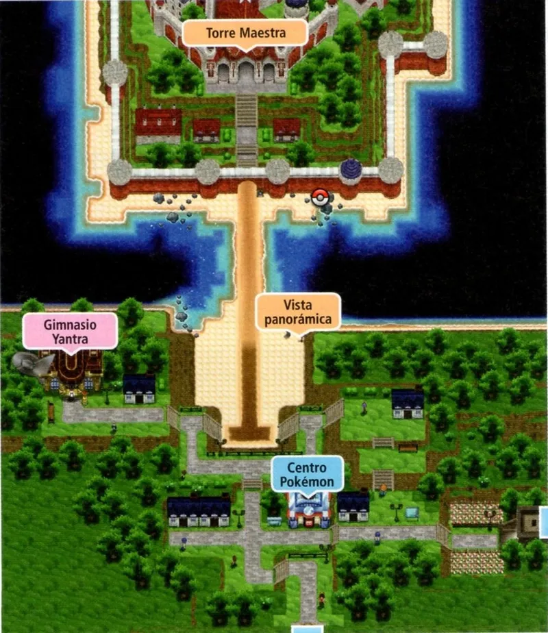
Una ciudad con un paseo con vistas panorámicas. Su gimnasio es de tipo Lucha.
Gimnasio: Lucha
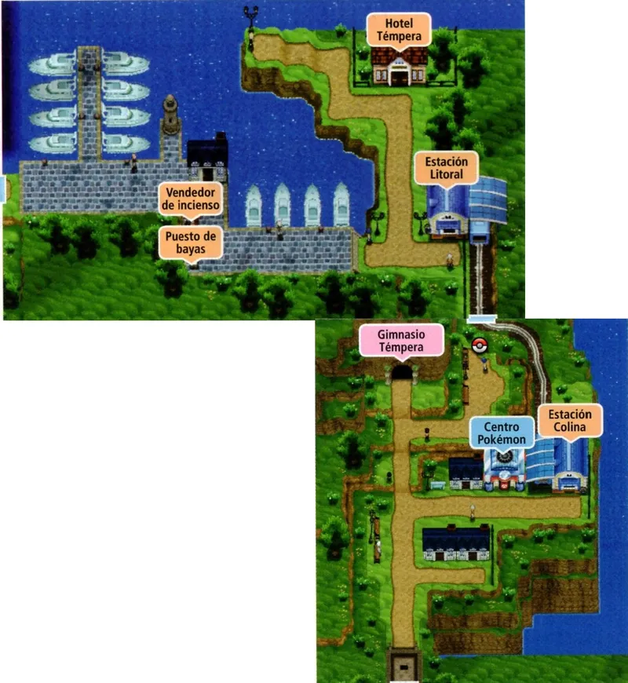
Una ciudad en el norte de Kalos, rodeada de árboles y de naturaleza. Su gimnasio es de tipo Planta.
Gimnasio: Planta
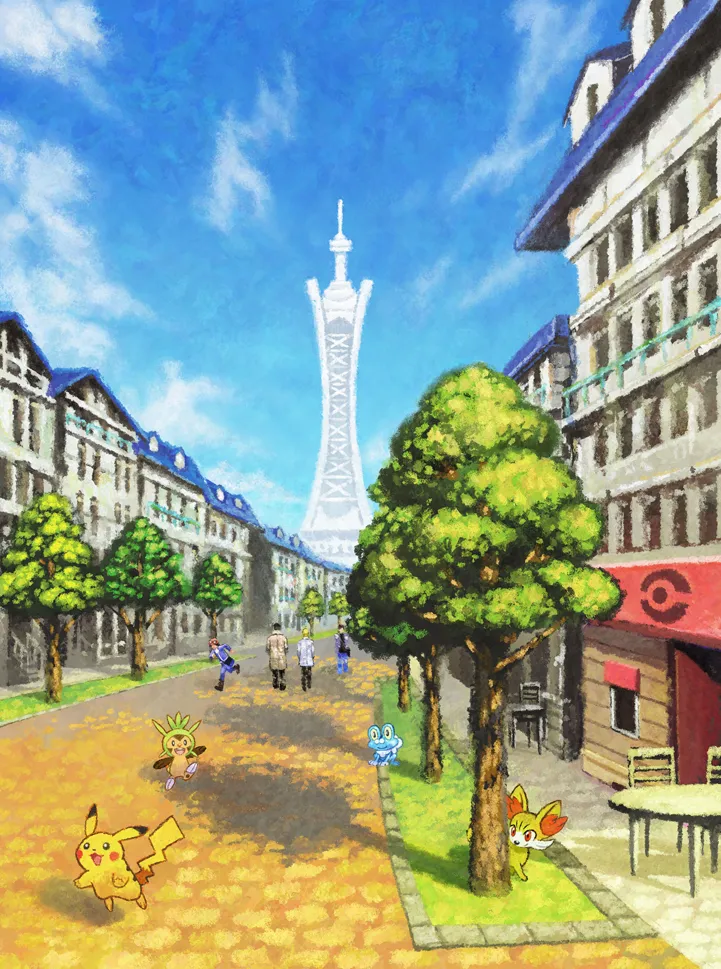
La ciudad principal de Kalos, con la Torre Prisma en el centro. Aquí está el Laboratorio del Profesor Ciprés y el gimnasio de Eléctrico.
Gimnasio: Eléctrico
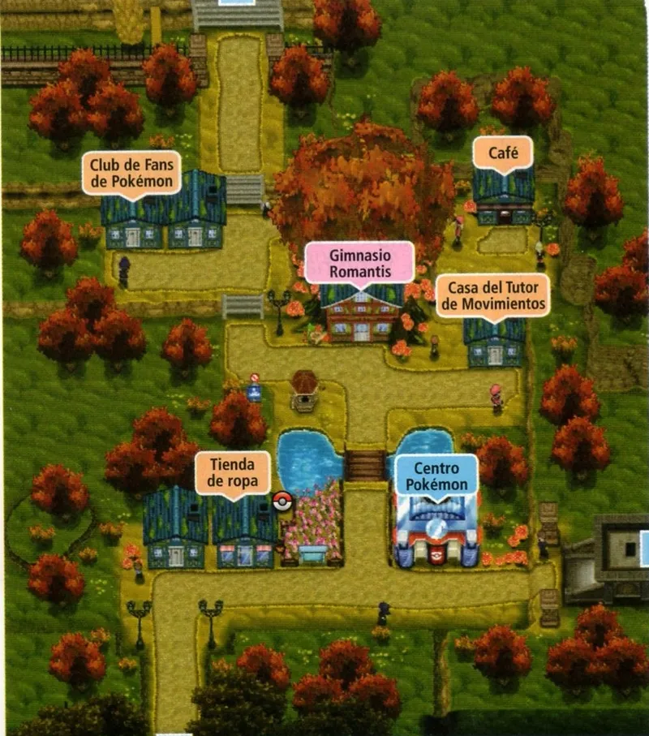
Una ciudad de ambiente romántico, con jardines y casas de cuento. Su gimnasio es de tipo Hada.
Gimnasio: Hada
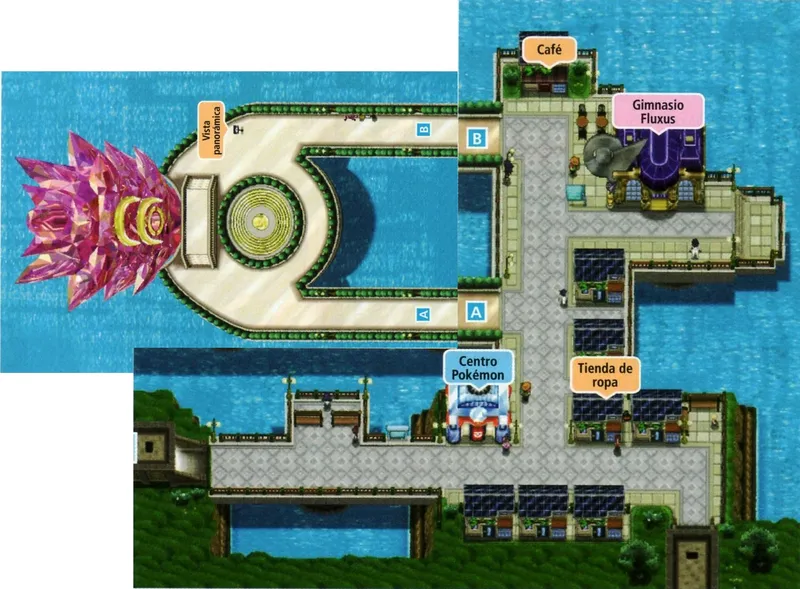
Una ciudad en el este, con edificios blancos y modernos. Su gimnasio es de tipo Psíquico.
Gimnasio: Psíquico
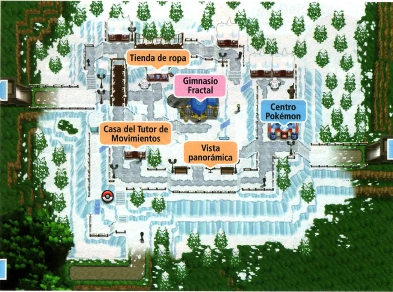
Una ciudad helada, en el este de Kalos, cubierta de nieve. Su gimnasio es de tipo Hielo.
Gimnasio: Hielo
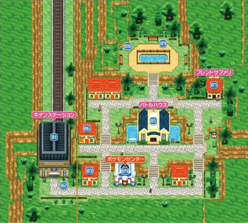
Una ciudad en el sur de Kalos, con muchos colores y casas pequeñas.
Pulsa en un Pokémon para verlo en grande.
Hada
El Pokémon de la vida. Con su poder puede dar vida a todo el mundo y vivir miles de años. Es el legendario de X.
Siniestro Volador
El Pokémon de la destrucción. Absorbe la energía de los seres vivos para despertarse. Es el legendario de Y.
Dragón Tierra
El guardián del equilibrio de la naturaleza. Vive en secreto en una cueva y se puede ver en tres formas.
Roca Hada
El Pokémon joya. Es un Pokémon legendario muy raro y se podía conseguir en un evento especial.
Psíquico Fantasma
El Pokémon travieso. Puede abrir portales para traer objetos y Pokémon desde muy lejos. También se podía conseguir en un evento.
Fuego Agua
Un Pokémon legendario que lanza vapor y que puede hacer erupcionar una montaña. También se conseguía en un evento.
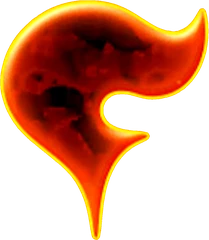
El Equipo Flare dice que quiere crear un mundo más hermoso, pero para eso quiere acabar con todos los que no sean como él. Para conseguirlo, quiere usar un arma definitiva alimentada por la energía de Xerneas o de Yveltal.
Sus miembros llevan trajes rojos y gafas, y tienen un aspecto muy elegante. Dentro del equipo hay científicos, como Xero, y Malva, que además forma parte de la Liga.
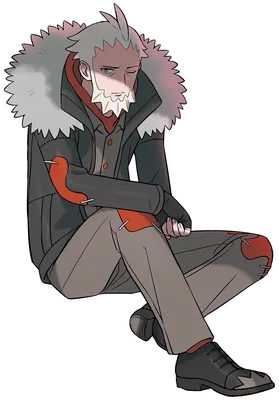
Líder del Equipo Flare
Un hombre elegante y misterioso. Es el dueño de una empresa muy importante de Kalos, pero en secreto es el jefe del Equipo Flare.
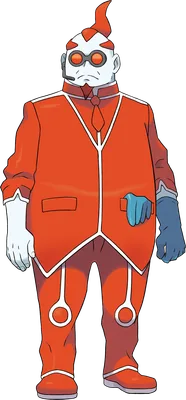
Científico del Equipo Flare. Es el responsable del laboratorio secreto del equipo.
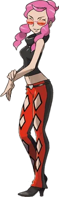
Miembro del Alto Mando. Trabaja para Lysson y es una periodista que usa Pokémon de tipo Fuego.
Los ocho gimnasios de Kalos, en el orden normal del viaje.
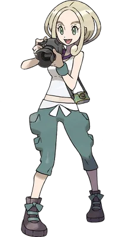
Ciudad Novarte
Bicho · Medalla Insecto
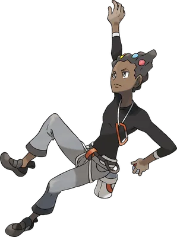
Ciudad Relieve
Roca · Medalla Muro
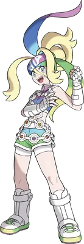
Ciudad Yantra
Lucha · Medalla Lid
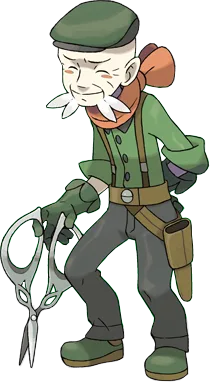
Ciudad Témpera
Planta · Medalla Hoja
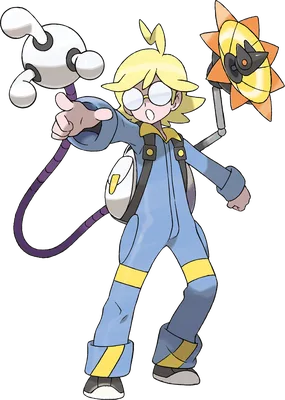
Ciudad Luminalia
Eléctrico · Medalla Voltaje
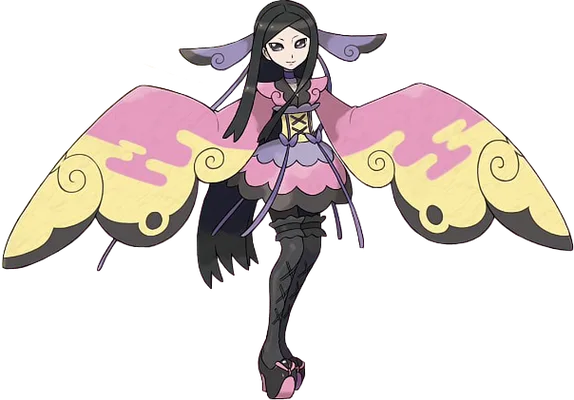
Ciudad Romantis
Hada · Medalla Hada
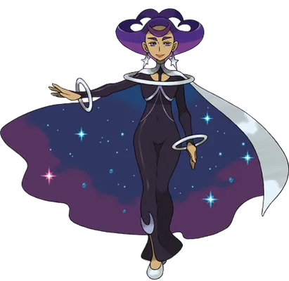
Ciudad Fluxus
Psíquico · Medalla Psique
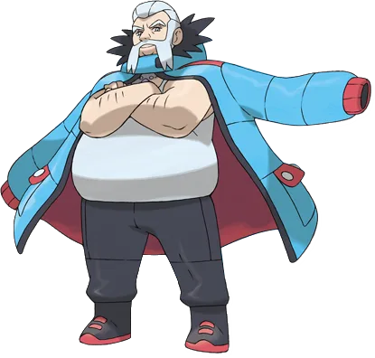
Ciudad Fractal
Hielo · Medalla Iceberg
La Liga está al final de la Calle Victoria. Hay que tener las ocho medallas. Se puede vencer al Alto Mando en el orden que se quiera y, por último, a la Campeona.
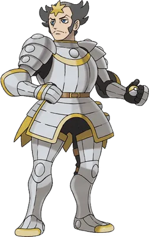
Alto Mando
Acero
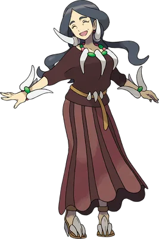
Alto Mando
Dragón
Alto Mando
Fuego
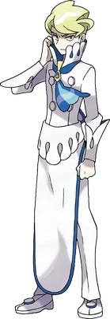
Alto Mando
Agua
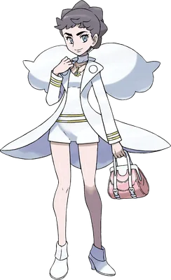
Campeona
Una actriz muy famosa y la mejor entrenadora de Kalos. Es la campeona de la Liga.
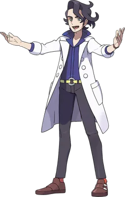
El investigador de la megaevolución. Te da tu primer Pokémon y te pide que completes la Pokédex.
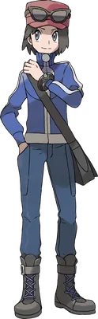
Uno de tus amigos y rival. Es un entrenador decidido y muy respetuoso; te reta durante el viaje.
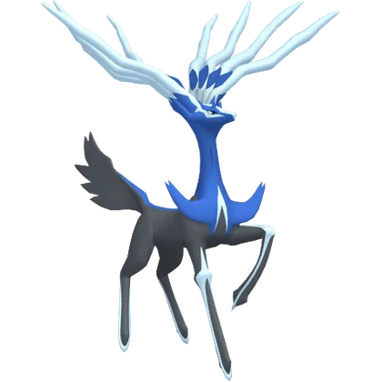
Xerneas
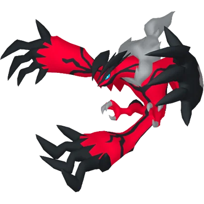
Yveltal
Zygarde
Diancie
Hoopa
Volcanion
Vivillon
Tyrantrum
Lucario
Gogoat
Heliolisk
Sylveon
Meowstic
Abomasnow
Aegislash
Noivern
Pyroar
Barbaracle
Gardevoir